FinIntel - Tiền xử lý và chất lượng dữ liệuDữ liệu đầu vào và phạm vi thực nghiệm
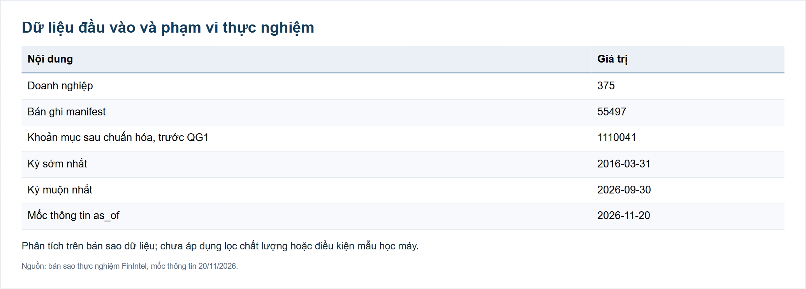
Phân tích trên bản sao dữ liệu; chưa áp dụng lọc chất lượng hoặc điều kiện mẫu học máy.
Bảng 3.4.1a. Dữ liệu thiếu sau bước chuẩn hóa
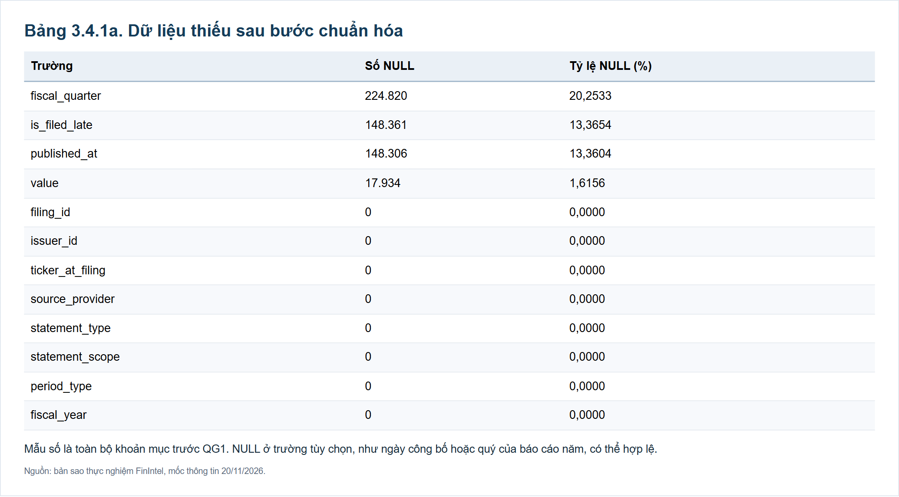
Mẫu số là toàn bộ khoản mục trước QG1. NULL ở trường tùy chọn, như ngày công bố hoặc quý của báo cáo năm, có thể hợp lệ.
Hình 3.4.1a. Tỷ lệ thiếu theo trường
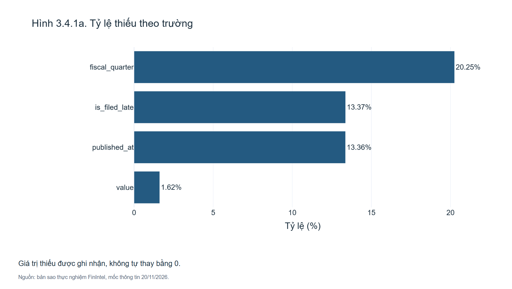
Giá trị thiếu được ghi nhận, không tự thay bằng 0.
Bảng 3.4.1b. Kiểm tra cấu trúc và định dạng
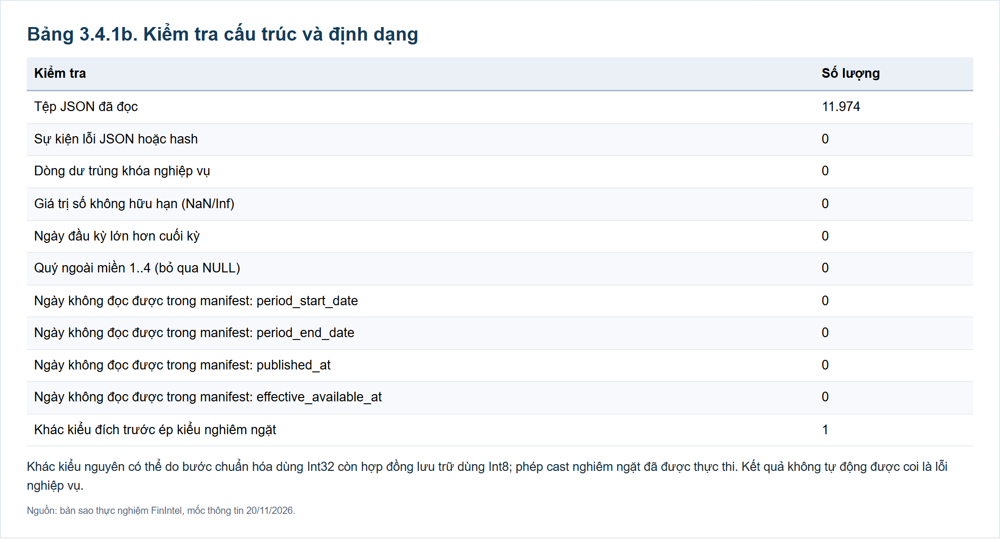
Khác kiểu nguyên có thể do bước chuẩn hóa dùng Int32 còn hợp đồng lưu trữ dùng Int8; phép cast nghiêm ngặt đã được thực thi. Kết quả không tự động được coi là lỗi nghiệp vụ.
Các khác biệt kiểu dữ liệu cần quy về hợp đồng
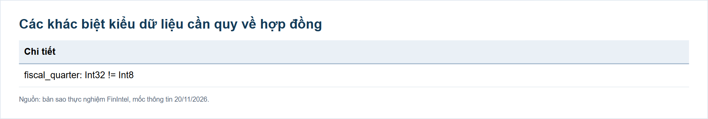
Bảng 3.4.1c. Kết quả cổng chất lượng QG1
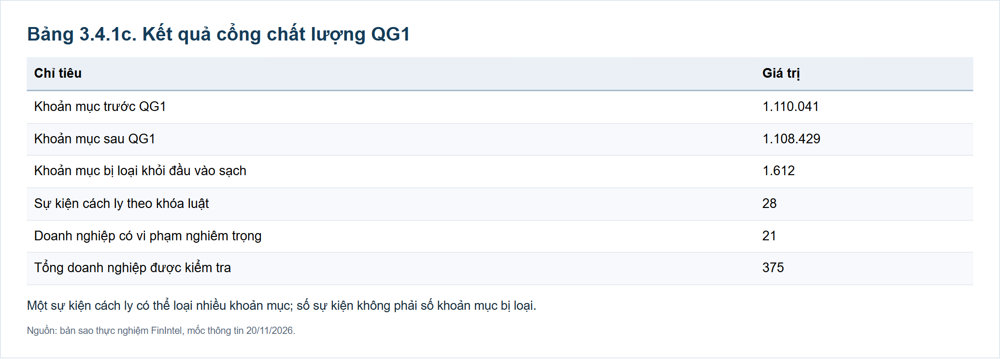
Một sự kiện cách ly có thể loại nhiều khoản mục; số sự kiện không phải số khoản mục bị loại.
Hình 3.4.1b. Các nhóm vi phạm cần cách ly
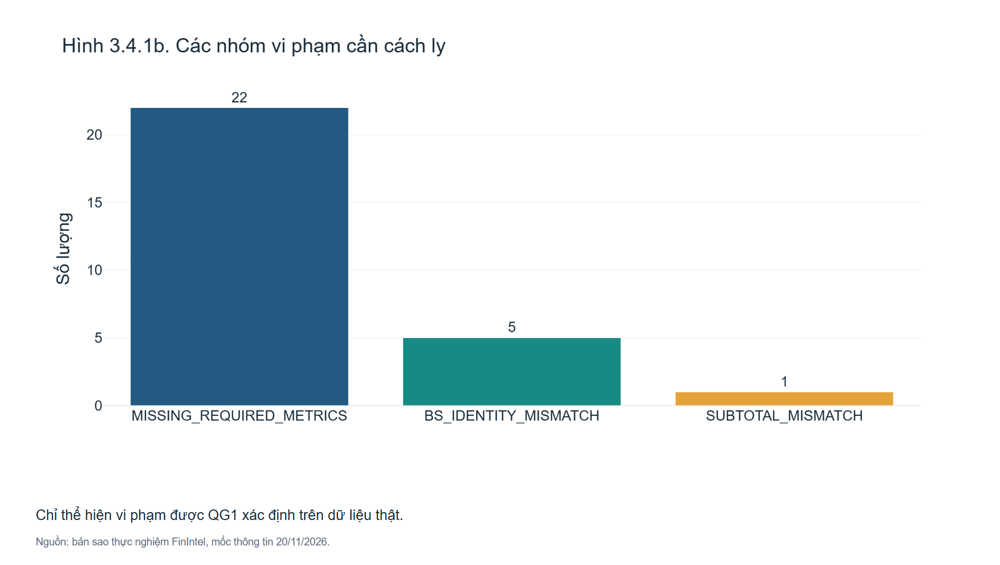
Chỉ thể hiện vi phạm được QG1 xác định trên dữ liệu thật.
Bảng 3.4.2a. Ánh xạ báo cáo FPT năm 2025
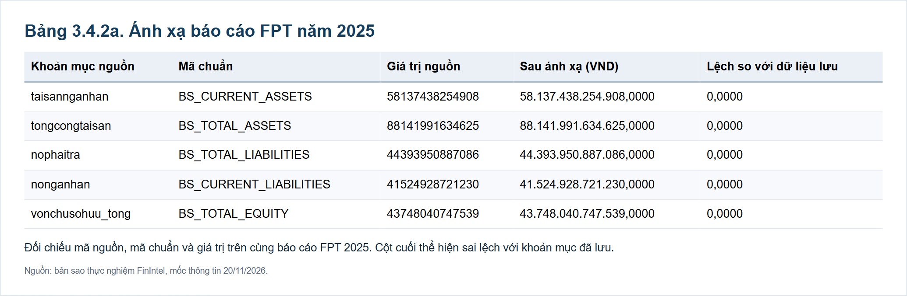
Đối chiếu mã nguồn, mã chuẩn và giá trị trên cùng báo cáo FPT 2025. Cột cuối thể hiện sai lệch với khoản mục đã lưu.
Bảng 3.4.2b. Đơn vị và hệ số thực tế
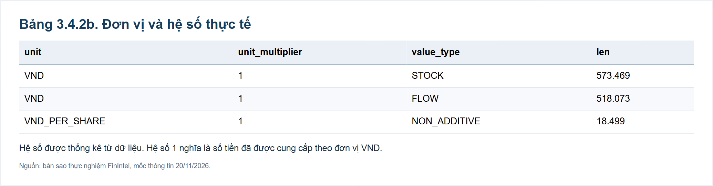
Hệ số được thống kê từ dữ liệu. Hệ số 1 nghĩa là số tiền đã được cung cấp theo đơn vị VND.
Bảng 3.4.2c. Cách hình thành số liệu theo kỳ
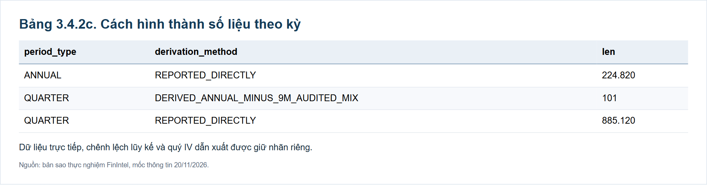
Dữ liệu trực tiếp, chênh lệch lũy kế và quý IV dẫn xuất được giữ nhãn riêng.
Hình 3.4.2. Nguồn hình thành số liệu chuẩn hóa
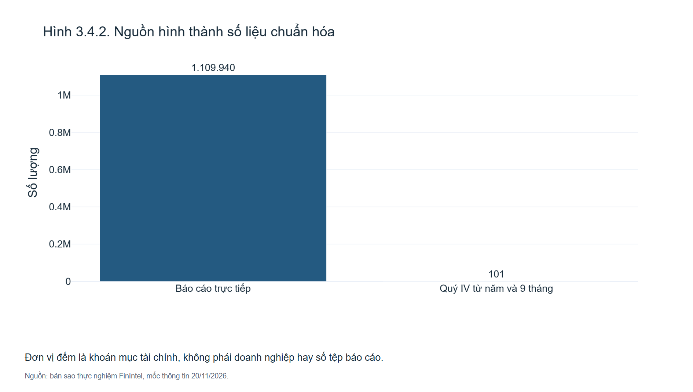
Đơn vị đếm là khoản mục tài chính, không phải doanh nghiệp hay số tệp báo cáo.
Bảng 3.4.3a. Lịch sử phiên bản báo cáo
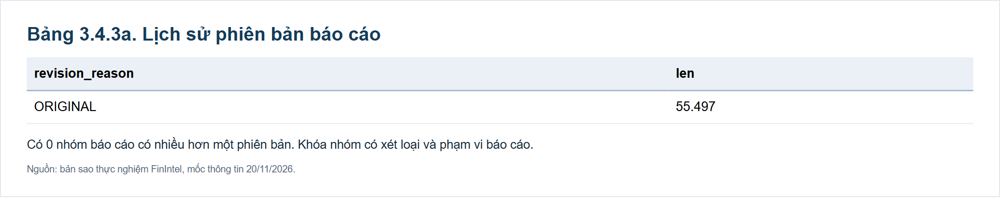
Có 0 nhóm báo cáo có nhiều hơn một phiên bản. Khóa nhóm có xét loại và phạm vi báo cáo.
Bảng 3.4.3b. Kiểm tra phiên bản điều chỉnh trong tập dữ liệu
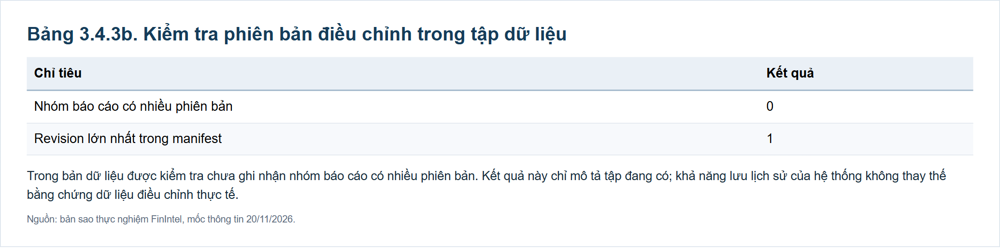
Trong bản dữ liệu được kiểm tra chưa ghi nhận nhóm báo cáo có nhiều phiên bản. Kết quả này chỉ mô tả tập đang có; khả năng lưu lịch sử của hệ thống không thay thế bằng chứng dữ liệu điều chỉnh thực tế.
Bảng 3.4.3c. Cơ sở xác định thời điểm sẵn có
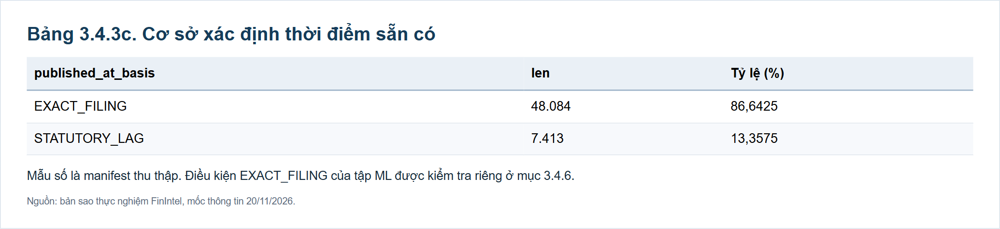
Mẫu số là manifest thu thập. Điều kiện EXACT_FILING của tập ML được kiểm tra riêng ở mục 3.4.6.
Hình 3.4.3. Độ phủ thời điểm công bố
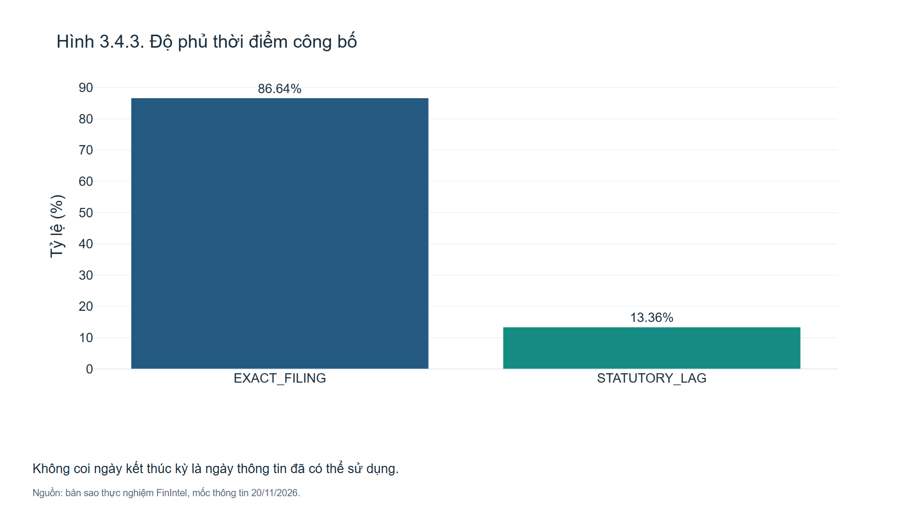
Không coi ngày kết thúc kỳ là ngày thông tin đã có thể sử dụng.
Bảng 3.4.3d. Độ trễ công bố theo năm
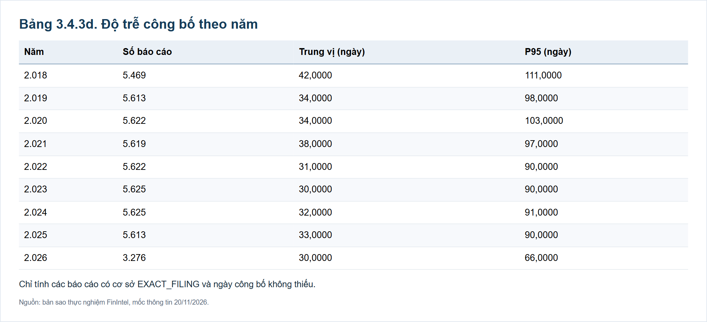
Chỉ tính các báo cáo có cơ sở EXACT_FILING và ngày công bố không thiếu.
Bảng 3.4.4a. Độ phủ các chỉ số sau tính toán
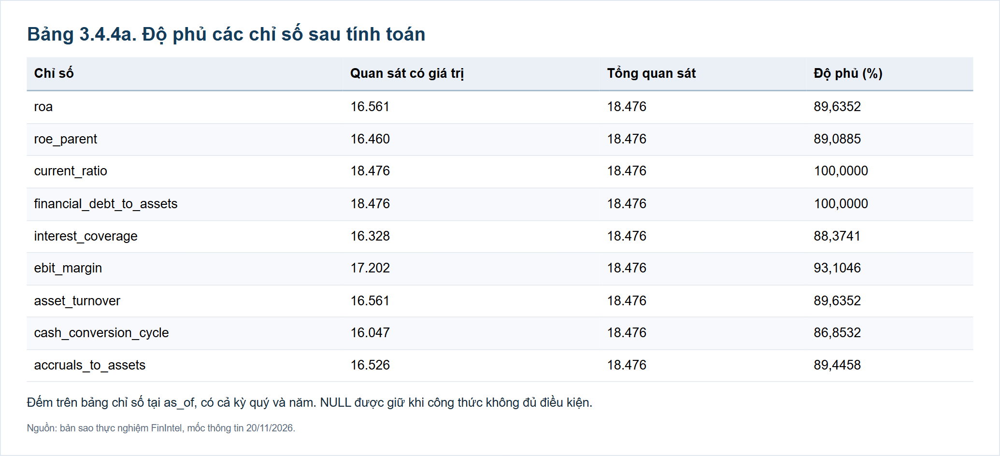
Đếm trên bảng chỉ số tại as_of, có cả kỳ quý và năm. NULL được giữ khi công thức không đủ điều kiện.
Hình 3.4.4. Độ phủ chỉ số tài chính
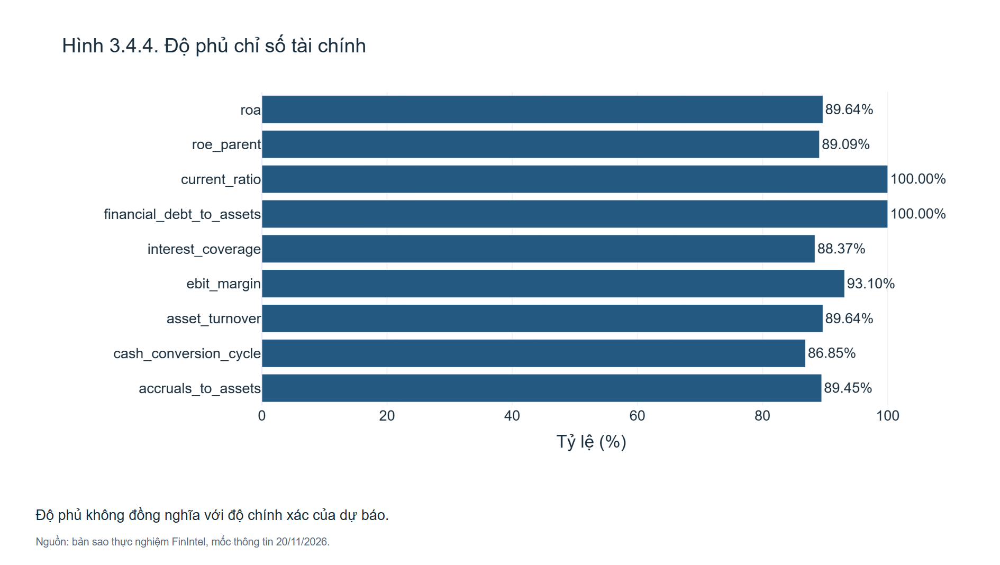
Độ phủ không đồng nghĩa với độ chính xác của dự báo.
Bảng 3.4.4b. Ví dụ chỉ số FPT qua các quý
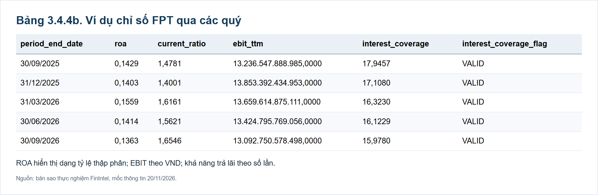
ROA hiển thị dạng tỷ lệ thập phân; EBIT theo VND; khả năng trả lãi theo số lần.
Bảng 3.4.4c. Đặc trưng được cấu hình
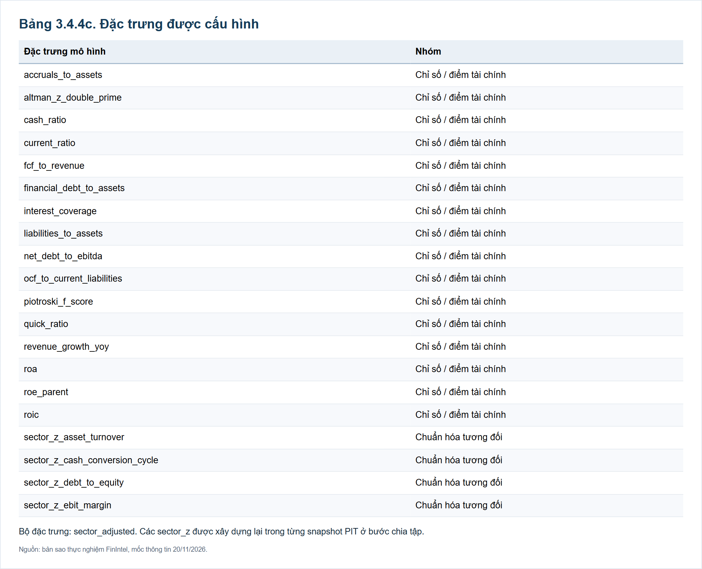
Bộ đặc trưng: sector_adjusted. Các sector_z được xây dựng lại trong từng snapshot PIT ở bước chia tập.
Bảng 3.4.5a. Phân bố nhãn tại mốc thông tin
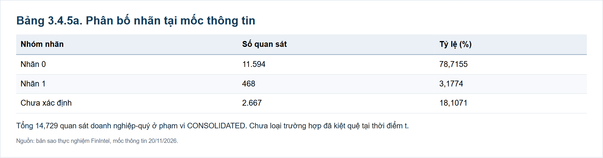
Tổng 14,729 quan sát doanh nghiệp-quý ở phạm vi CONSOLIDATED. Chưa loại trường hợp đã kiệt quệ tại thời điểm t.
Hình 3.4.5. Nhãn mục tiêu và quan sát chưa đủ điều kiện
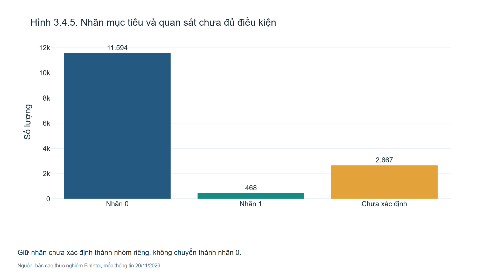
Giữ nhãn chưa xác định thành nhóm riêng, không chuyển thành nhãn 0.
Bảng 3.4.5b. Quy tắc nhãn được áp dụng
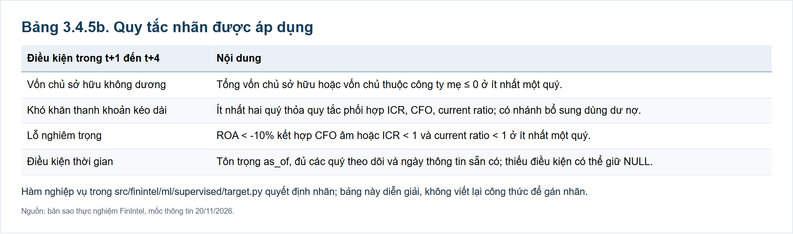
Hàm nghiệp vụ trong src/finintel/ml/supervised/target.py quyết định nhãn; bảng này diễn giải, không viết lại công thức để gán nhãn.
Bảng 3.4.5c. Ví dụ nhãn và ngày nhãn sẵn có
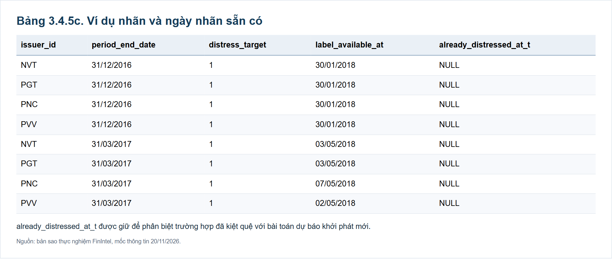
already_distressed_at_t được giữ để phân biệt trường hợp đã kiệt quệ với bài toán dự báo khởi phát mới.
Bảng 3.4.6a. Phân chia dữ liệu theo thời gian
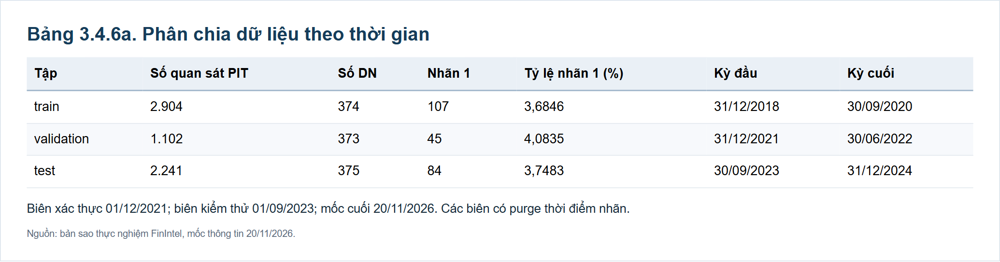
Biên xác thực 01/12/2021; biên kiểm thử 01/09/2023; mốc cuối 20/11/2026. Các biên có purge thời điểm nhãn.
Bảng 3.4.6b. Phân biệt tập PIT và mẫu so sánh khởi phát
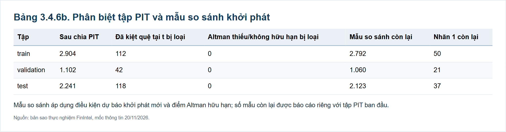
Mẫu so sánh áp dụng điều kiện dự báo khởi phát mới và điểm Altman hữu hạn; số mẫu còn lại được báo cáo riêng với tập PIT ban đầu.
Hình 3.4.6a. Quy mô và mất cân bằng nhãn sau chia PIT
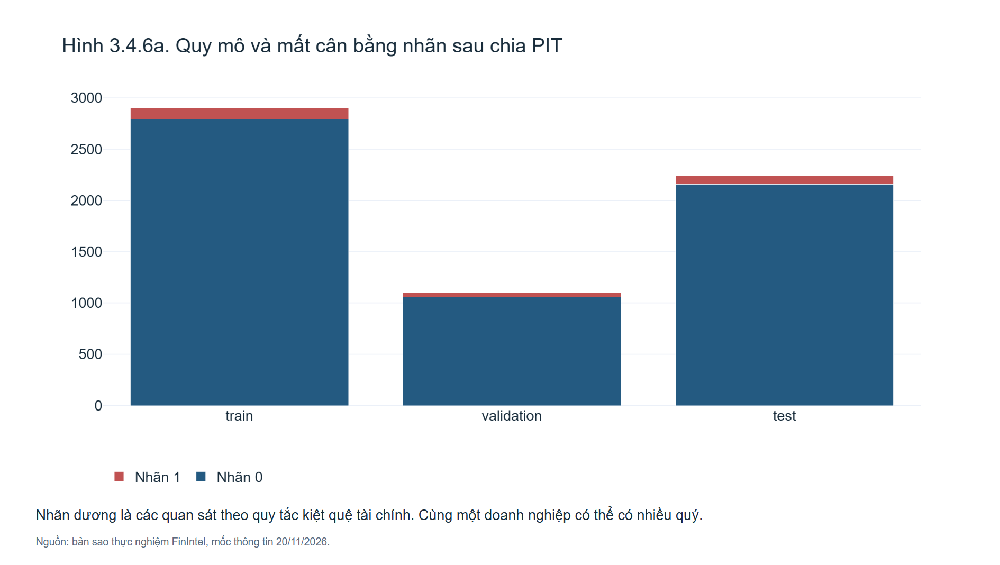
Nhãn dương là các quan sát theo quy tắc kiệt quệ tài chính. Cùng một doanh nghiệp có thể có nhiều quý.
Bảng 3.4.6c. Kiểm tra biên thời gian và provenance
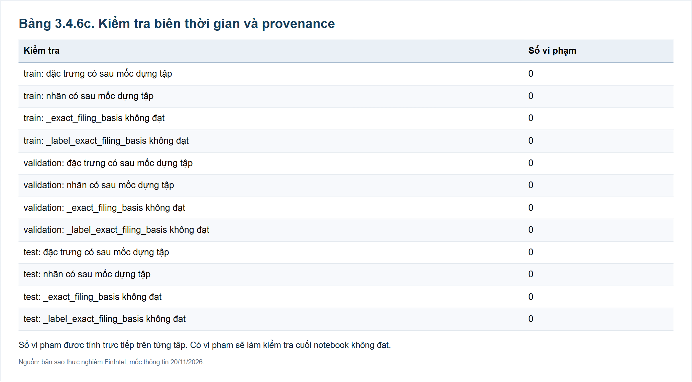
Số vi phạm được tính trực tiếp trên từng tập. Có vi phạm sẽ làm kiểm tra cuối notebook không đạt.
Bảng 3.4.6d. Bù thiếu và chuẩn hóa đặc trưng ML
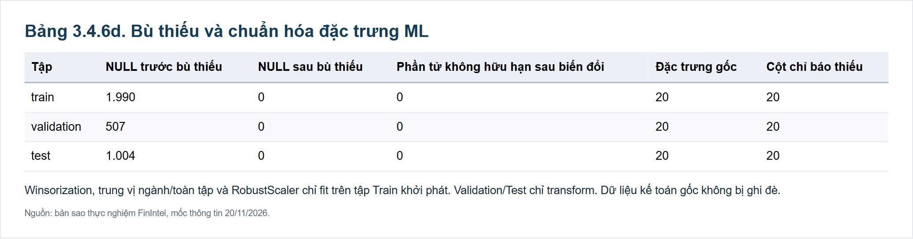
Winsorization, trung vị ngành/toàn tập và RobustScaler chỉ fit trên tập Train khởi phát. Validation/Test chỉ transform. Dữ liệu kế toán gốc không bị ghi đè.
Hình 3.4.6b. Dữ liệu thiếu trước và sau tiền xử lý ML
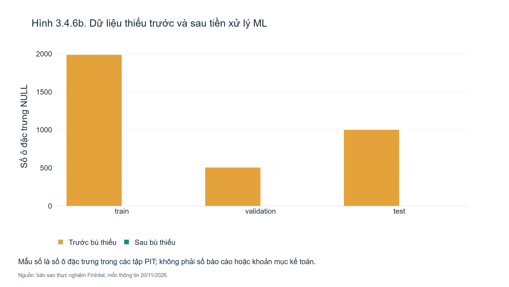
Mẫu số là số ô đặc trưng trong các tập PIT; không phải số báo cáo hoặc khoản mục kế toán.
Bảng 3.4.7a. Quy mô dữ liệu qua các tầng xử lý
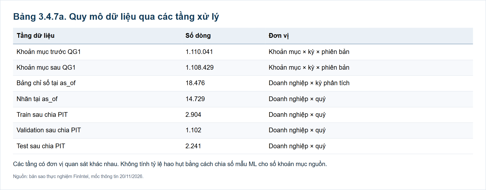
Các tầng có đơn vị quan sát khác nhau. Không tính tỷ lệ hao hụt bằng cách chia số mẫu ML cho số khoản mục nguồn.
Bảng 3.4.7b. Trạng thái chất lượng sau kiểm tra
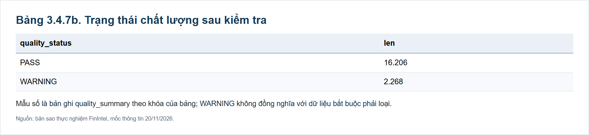
Mẫu số là bản ghi quality_summary theo khóa của bảng; WARNING không đồng nghĩa với dữ liệu bắt buộc phải loại.
Hình 3.4.7. Trạng thái chất lượng dữ liệu
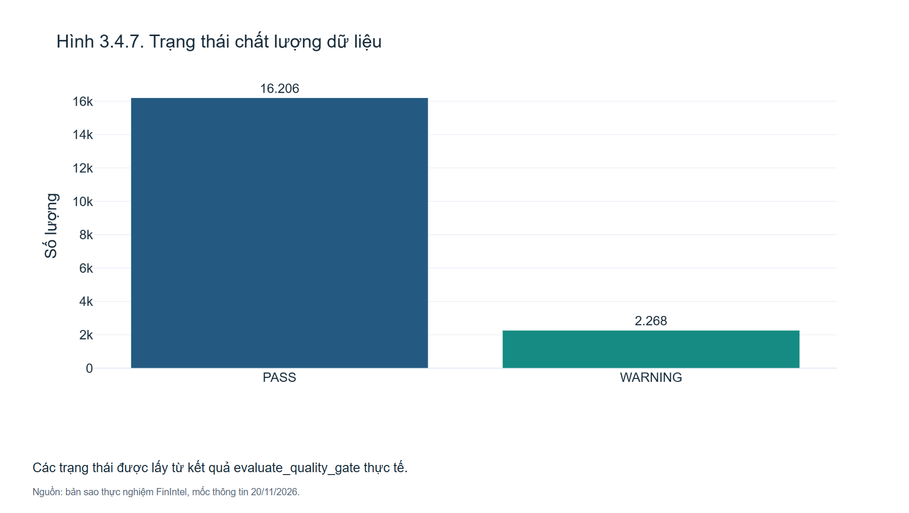
Các trạng thái được lấy từ kết quả evaluate_quality_gate thực tế.
Bảng 3.4.7c. Kiểm chứng cuối notebook
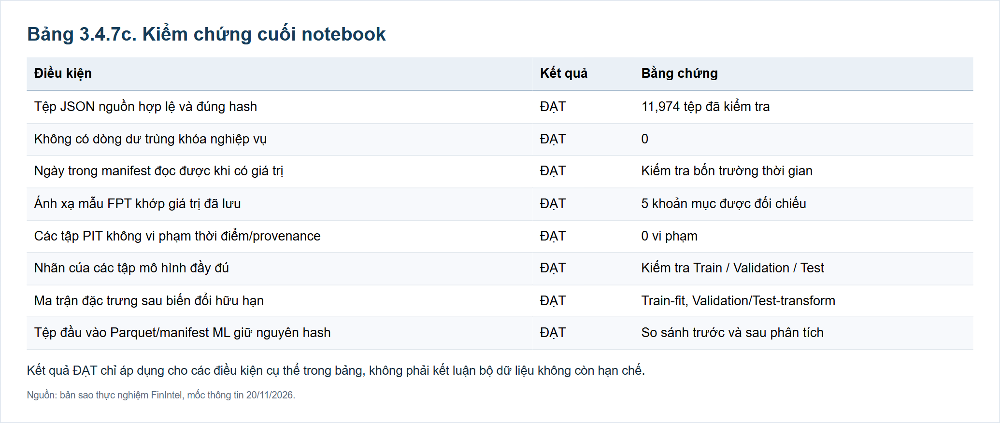
Kết quả ĐẠT chỉ áp dụng cho các điều kiện cụ thể trong bảng, không phải kết luận bộ dữ liệu không còn hạn chế.